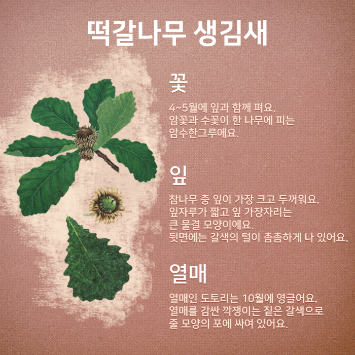
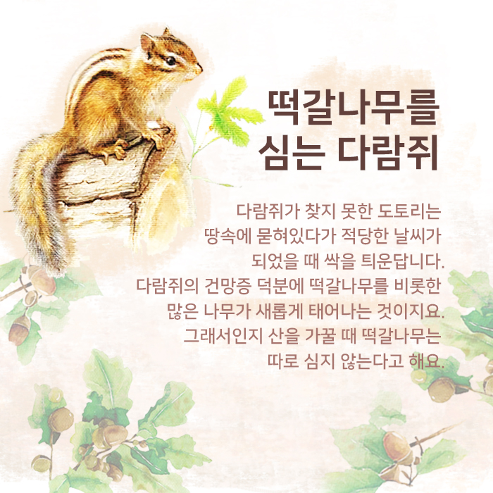
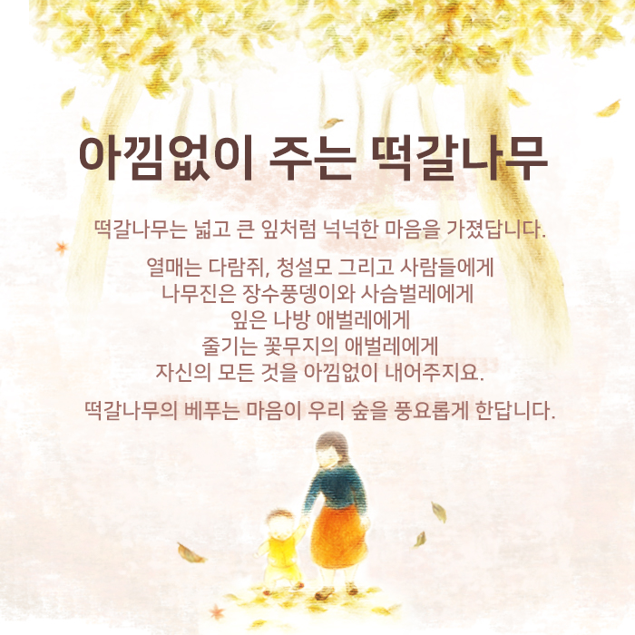
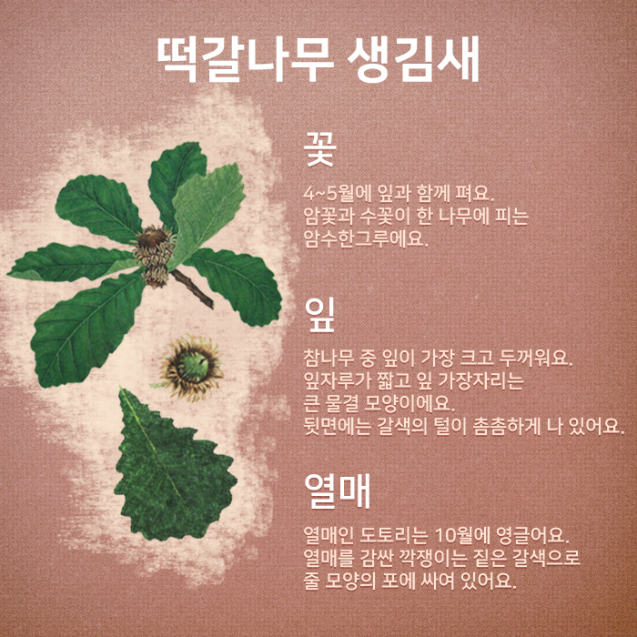
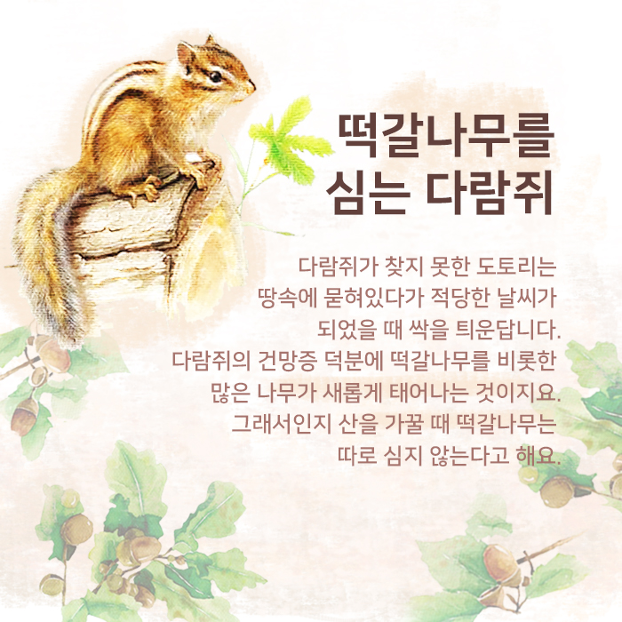
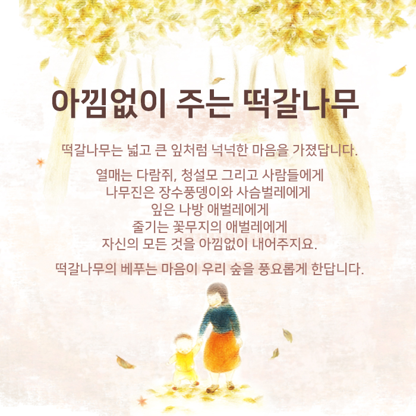

아낌없이 주는 나무 <떡갈나무>
참나무과의 넓은 잎 큰키나무
꽃피는 시기 : 4~5월
열매 맺는 시기 : 10월
다른 이름 : 가랑잎나무
꽃말 : 공명정대, 강건
가을에 산을 오르다 보면 발밑으로 작고 동글동글한 도토리가 숱하게 떨어져 뒹굴고 있는 것을 볼 수 있어요. 동그란 것, 길쭉한 것, 반질반질한 것, 투박한 것, 털모자 쓴 것, 빵모자 쓴 것… 그중 털모자를 쓴 동그란 도토리를 찾아 주위의 나무를 살펴보세요.
나뭇잎이 크고, 가장자리가 물결 모양인 나무! 잎 뒷면에 짧은 털이 촘촘하게 나 있는 나무를 찾았나요?
그 나무가 바로 떡갈나무랍니다.
잎 뒷면에 털이 난 나무
떡을 싸서 먹는다고 떡갈나무
옛날에는 어린 떡갈나무 잎에 떡을 싸서 쪄 먹어 ‘떡갈나무’라는 이름이 붙여졌답니다.
떡갈나무 생김새
꽃 - 4~5월에 잎과 함께 펴요. 암꽃과 수꽃이 한 나무에 피는 암수한그루에요.
잎 - 참나무 중 잎이 가장 크고 두꺼워요. 잎자루가 짧고 잎 가장자리는 큰 물결 모양이에요. 뒷면에는 갈색의 털이 촘촘하게 나 있어요.
열매 - 열매인 도토리는 10월에 영글어요. 열매를 감싼 깍쟁이는 짙은 갈색으로 줄 모양의 포에 싸여 있어요.
다람쥐가 좋아하는 떡갈나무 열매
떡갈나무는 산기슭 양지바른 곳에서 자라는 우리나라 토종나무에요. 참나무 중에서 잎이 가장 커요. 열매인 도토리를 다람쥐나 청설모가 좋아해요. 다람쥐는 겨울철 식량을 위해 도토리를 땅속 이곳저곳에 묻어요. 그런데 자신이 어디에 도토리를 묻었는지 거의 기억하지 못한대요.
떡갈나무를 심는 다람쥐
다람쥐가 찾지 못한 도토리는 땅속에 묻혀있다가 적당한 날씨가 되었을 때 싹을 틔운답니다. 다람쥐의 건망증 덕분에 떡갈나무를 비롯한 많은 나무가 새롭게 태어나는 것이지요. 그래서인지 산을 가꿀 때 떡갈나무는 따로 심지 않는다고 해요.
아낌없이 주는 떡갈나무
떡갈나무는 넓고 큰 잎처럼 넉넉한 마음을 가졌답니다. 열매는 다람쥐, 청설모 그리고 사람들에게 나무진은 장수풍뎅이와 사슴벌레에게 잎은 나방 애벌레에게 줄기는 꽃무지의 애벌레에게 자신의 모든 것을 아낌없이 내어주지요. 떡갈나무의 베푸는 마음이 우리 숲을 풍요롭게 한답니다.